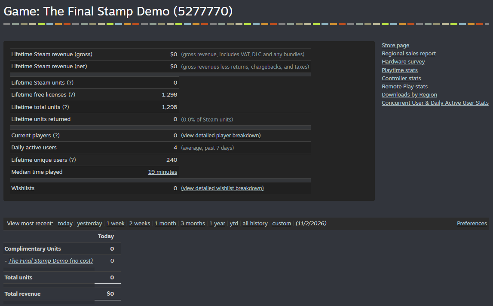
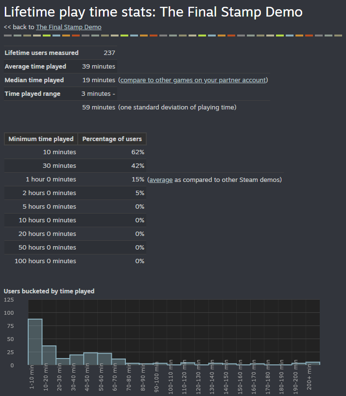
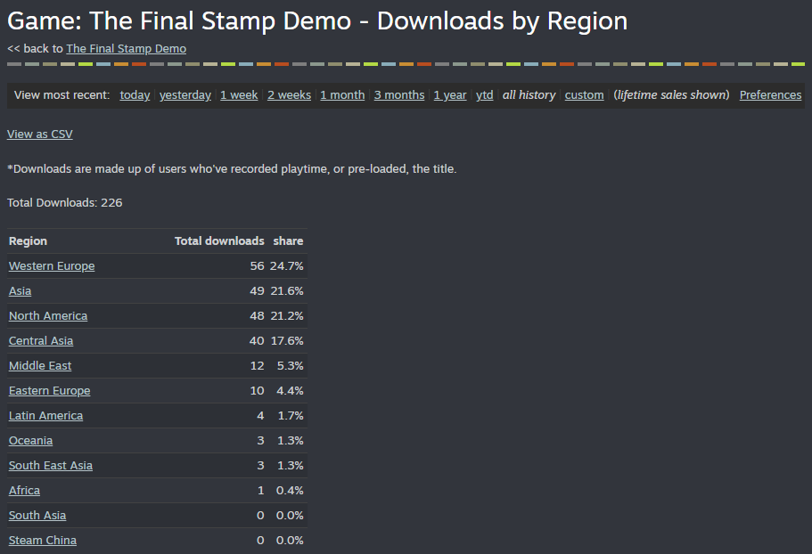
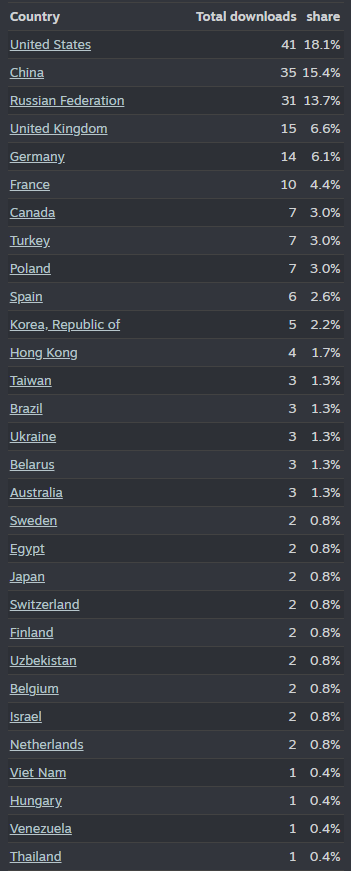

The dead lie too.
On the tenth floor of the Chancellery of the Afterlife, another soul steps up to your desk. The paperwork is in order. The explanation is ready. All that’s left is the stamp, if you believe it.
A trucker talks about the crash and his family. Johny Goldstein talks about his charity work. Everyone shows up with a story, and nobody hurries to show you the other side of it.
-
Step 1 of 4
Hear their side
Ask questions, catch contradictions, and come back with proof. Present the evidence and listen to how the story changes. Sometimes the new version sounds even more convincing.
Exhibit B. Questioning Bob: the child’s drawing, the business card, or end the conversation -
Step 2 of 4
Check the body, not the papers
Documents lie, the body does not. Hold up the Candle and the flame’s color gives away the sin. Test a hunch with the Camera, tune the Radio to a conversation from the past, and phone the afterlife’s own departments for records.
- Candle
- Camera
- Radio
- Telephone
- The Codex
Exhibit C. The Candle flares red in front of Bob Exhibit D. The Radio tunes in a conversation from the past -
Step 3 of 4
Build the case word by word
Words from documents and testimony turn into tiles on your desk. Combine them with other evidence to rebuild what happened, find a motive and the grounds for a verdict. Death is only where the case begins.
Exhibit E. Bob’s son drew this. Inspected up close, it becomes a tag: Family -
Step 4 of 4
One stamp. Three eternities.
Open the Codex, choose a destination and fill out the verdict sheet. A convenient story can send a murderer to Heaven. A suspicious detail can turn out to be innocent.
9circles of Hell7terraces of Purgatory7spheres of HeavenExhibit F. The stamp and “Hand to the soul”
Who are you to judge?
The Chancellery keeps traces of those who sat at this desk before you. Between appointments, search the office and find out how you ended up on this side of it.
On a new playthrough some souls tell a different truth, and a familiar face does not mean a familiar answer. Your own path leads to one of two endings, depending on how you did the job.
42% stayed past half an hour.
How long players stayed
Share of 237 measured players. Steam rates the 1-hour figure as average for a Steam demo.
Where the players are
Bars on a 0–20% scale. 226 downloads in total.
Most would judge another soul.
Ratings
Russian-language players averaged 4.3 (21 surveys), English-language 3.1 (13). Two German, one Korean and one Chinese survey.
Time in the session
Self-reported, number of surveys.
In the players’ words
“The game is about confrontation with unyielding truth. Even when deceit is impossible, the souls lie about their misdeeds and shortcomings. The protagonist is not better than them. They are just on the other side of the desk.”
“Saint Peter’s deputy.”
“A game about how hard it is to make the right decisions.”
“The game revolves around investigating the stories of the deceased, examining evidence, and then deciding their fate: Heaven, Hell, or Purgatory.”
“The theme hooked me, the idea is great, I really want to see what comes next. The tutorial needs work.”
The first five minutes decide it.
Most complaints are about the first minutes, not the cases themselves. The survey points at four fixes.
Teach one instrument at a time
The most common complaint: the tutorial and the Codex show everything at once, before the hands-on part.
- 28 / 38
never noticed the flame in the urn, the game’s signal for how the verdict landed.
- 20 / 38
wanted the game to say outright whether their verdict was right.
Fix the rotary phone
Players liked the idea, but the dial often lands on a wrong number.
Check our numbers.
Every figure on this page comes from these files: Steamworks screenshots taken on 2 November 2026 and all 38 playtest surveys. Players’ contact details are removed.




- Download .xlsx
Playtest answers
- Download .zip
Steam screenshots